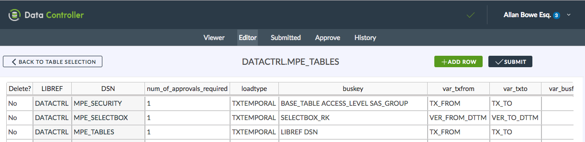

Data Controller for SAS® - Adding Tables
Overview
Adding tables to the Data Controller is a matter of configuration, specifically the addition of a new record to the DATACTRL.MPE_TABLES table.
Note
In order to surface the table to users, appropriate groups should be configured as per security settings.

Details
Each table to be edited in the Data Controller is represented by one record in DATACTRL.MPE_TABLES. The fields should be populated as follows:
LIBREF
The libref of the table. If not pre-assigned, DC will assign it at runtime using the first definition found in metadata, using this macro.
DSN
The dataset (table) name as visible when assigning a direct libref connection to LIBREF.
NUM_OF_APPROVALS_REQUIRED
This is an integer representing the number of approvals required before a table is updated. This mechanism lets you insist on, say, 2 or 3 approvals before sensitive data is updated following a submission. Note that only one rejection is ever necessary to remove the submission. This is a required field.
LOADTYPE
The loadtype determines the nature of the update to be applied. Valid values are as follows:
Note
The support for BITEMPORAL loads is restricted, in the sense it is only possible to load data at a single point in time (no support for loading multiple business date ranges for a single business key). The workaround is simply to load each date range separately.
BUSKEY
The business (natural) key of the table. For SCD2 / Bitemporal, this does NOT include the validity dates. For Retained / Surrogate key tables, this contains the actual surrogate key - the underlying fields that are used to create the surrogate key are specified in RK_UNDERLYING. This is a required field.
VAR_TXFROM / VAR_TXTO
The SCD2 type validity dates, representing the point in time at which the field was created (VAR_TXFROM) and when it was closed out (VAR_TXTO) from a change or deletion. If the record is active, the VAR_TXTO field would contain a high value. VAR_TXFROM is a part of the physical key of the underlying table.
These fields should contain the NAME of the variables which contain the open / close timestamps in the underlying table.
Leave blank if not required.
VAR_BUSFROM / VAR_BUSTO
The BITEMPORAL business dates which represent the reporting period to which the record is valid. Typically these contain date values (rather than datetime values). If variables are specified here, then the LOADTYPE should be BITEMPORAL.
Leave blank if not required.
VAR_PROCESSED
Set the name of a variable (eg processed_dttm) which should be given a current timestamp whenever the table is updated.
Leave blank if not required.
CLOSE_VARS
By default, the data controller will only process the records that are part of a changeset. This means that records should be explicity marked for deletion. But what if you are performing a reload of a monthly batch, and the absence of a record implies that it is no longer required? For this scenario, it is necessary to specify the range within a 'complete' load is expected. For instance, by reporting month, or month + product. When performing loads, the DC will then first extract a distinct list of values for this key and close them out in the target table, before performing the upload. The CLOSE_VARS are typically a subset of the BUSKEY fields.
Leave blank if not required.
PRE_EDIT_HOOK
The full path / location (unquoted) of a SAS program that will be %inc'd prior to an edit being made. This allows a particular view of a table to be presented to a user for editing (eg masking columns etc).
Leave blank if not required.
POST_EDIT_HOOK
The full path / location (unquoted) of a SAS program that will be %inc'd after an edit has been made. This modifies the CSV that is created in the staging area, and can be useful for augmenting data / applying complex DQ fixes.
Leave blank if not required.
PRE_APPROVE_HOOK
The full path / location (unquoted) of a SAS program that will be %inc'd before an approval diff is generated. This modifies the value that is presented to an approver on the approve screen, and can be helpful in terms of ensuring that information is presented in way that can be easily consumed by approvers.
Leave blank if not required.
POST_APPROVE HOOK
The full path / location (unquoted) of a SAS program that will be %inc'd after an approval is made. This is the most common type of hook script, and is useful for, say, running a SAS job after a mapping table is updated, or running a model after changing a parameter.
Leave blank if not required.
SIGNOFF_COLS
Used to determine a range (eg reporting month) to which a 'final version' can be marked. This allows a particular version of data to be marked as final, meaning that the data can continue to change afterwards (reports can simply query for the timestamp of the 'final' version of the data). Leave blank if not required.
SIGNOFF_HOOK
The full path / location (unquoted) of a SAS program that will be %inc'd after a 'final version' has been signed off.
Leave blank if not required.
NOTES
Content entered here will be displayed to the approver on signoff. Not required, but recommended.
RK_UNDERLYING
For retained / surrogate keys, an auto-incrementing field is used to represent each unique record. In this case, the RK (integer) field itself should be added in the BUSKEY column, and the natural / underlying key should be added here. Leave blank unless using retained / surrogate keys.
HELPFUL_LINK
If more information is available to describe the table being updated (eg on sharepoint), provide a url here and it will be made available to approvers. Leave blank if not required.